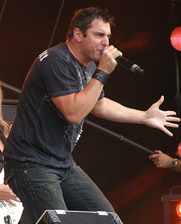

Johny Gioeli
Vocalista de la banda de Rock "Crush 40"

Giuseppe Baptista Gioeli , más conocido como Johnny Gioeli es un cantante estadounidense de hard rock. Originalmente fue el vocalista de la extinta banda Phaze, y luego de la banda Hardline, aunque también fue el vocalista de la banda liderada por el guitarrista alemán Axel Rudi Pell y actualmente es el vocalista de Crush 40
Lista de fechas importantes
- Nacimiento: 5 de octubre de 1967
- Creación de la banda Phaze: 1980
- Creación de la banda Hardline: 1992
- Colaboración con Alex Rudi Pell: 1998
- Creación de la banda Crush 40: 1998
Lista de Datos Personales
- Nombre Completo: Giuseppe Baptista Gioeli
- Nombre Artístico: Johnny Gioeli
- Edad: 56 Años
- Hermano Mayor (Co-creador de Hardline): Joey Gioeli
Lista de canciones recomendadas
Open Your Heart
Live And Learn
What I'm Made Of
His World
Seven Rings In Hand
Ir al formulario de contacto